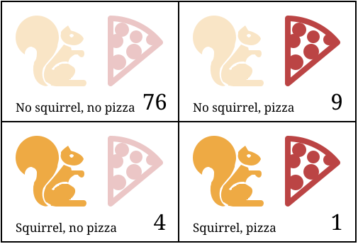
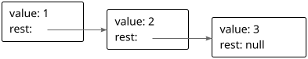

الفصل 04
بنى البيانات: الكائنات والمصفوفات
في مناسبتين سُئلت: «أرجوك يا سيد باباج، إن وضعت في الآلة أرقاماً خاطئة، فهل ستخرج الإجابات الصحيحة؟» [...] ولا أستطيع أن أستوعب على نحو سليم نوع الالتباس في الأفكار الذي قد يدفع إلى سؤال كهذا.
— تشارلز باباج، مقتطفات من حياة فيلسوف (1864)
الأعداد والقيم المنطقية والنصوص هي الذرات التي تُبنى منها بنى البيانات. لكن أنواعاً كثيرة من المعلومات تتطلب أكثر من ذرة واحدة. وتتيح لنا الكائنات تجميع القيم—بما فيها كائنات أخرى—لبناء بنى أكثر تعقيداً.
كانت البرامج التي بنيناها حتى الآن محدودة لأنها كانت تعمل على أنواع بيانات بسيطة فقط. وبعد تعلّم أساسيات بنى البيانات في هذا الفصل، ستعرف ما يكفي لبدء كتابة برامج مفيدة.
سيمضي هذا الفصل في مثال برمجي واقعي إلى حد ما، مقدِّماً المفاهيم أثناء تطبيقها على المسألة المطروحة. وسيبني كود المثال غالباً على دوال وارتباطات قُدّمت سابقاً في الكتاب.
السنجاب المتحوّل
من وقت لآخر، عادةً بين الثامنة والعاشرة مساءً، يجد جاك نفسه متحولاً إلى قارض صغير مكسوّ بالفرو ذي ذيل كثّ.
من جهة، جاك سعيد جداً بأنه لا يعاني الاستذئاب (lycanthropy) الكلاسيكي. فالتحول إلى سنجاب يسبب مشكلات أقل من التحول إلى ذئب. فبدلاً من أن يقلق من أن يأكل الجار عن غير قصد (هذا سيكون محرجاً)، يقلق من أن يأكله قط الجار. وبعد مناسبتين استيقظ فيهما على غصن رفيع محفوف بالخطر في قمة بلوطة، عارياً وتائه الذهن، أخذ يقفل أبواب غرفته ونوافذها ليلاً ويضع بعض الجوز على الأرض ليبقي نفسه مشغولاً.
لكن جاك يفضّل التخلص من حالته تماماً. فحدوث التحول على نحو غير منتظم يجعله يشك في أن شيئاً ما قد يحفّزه. وقد اعتقد لفترة أنه لا يحدث إلا في الأيام التي يكون فيها قريباً من أشجار البلوط. غير أن تجنّب أشجار البلوط لم يحل المشكلة.
وقد تحوّل جاك إلى نهج أكثر علمية، فبدأ يدوّن يومياً كل ما يفعله في يوم معين وما إذا كان قد تغيّر شكله. وبهذه البيانات يأمل في حصر الظروف التي تحفّز التحولات.
أول ما يحتاجه هو بنية بيانات لتخزين هذه المعلومات.
مجموعات البيانات
للتعامل مع كتلة من البيانات الرقمية، علينا أولاً إيجاد طريقة لتمثيلها في ذاكرة آلتنا. لنفترض، مثلاً، أننا نريد تمثيل مجموعة من الأعداد هي 2 و3 و5 و7 و11.
يمكننا الإبداع بالنصوص—فالنصوص يمكن أن يكون لها أي طول، ومن ثم يمكننا وضع قدر كبير من البيانات فيها—ونستخدم "2 3 5 7 11" تمثيلاً لنا. لكن هذا مرهق. إذ سيتعين علينا أن نستخرج الأرقام بطريقة ما ونحوّلها مرة أخرى إلى أعداد للوصول إليها.
لحسن الحظ، توفّر JavaScript نوع بيانات مخصصاً لتخزين متتاليات من القيم. ويسمى مصفوفة (array)، ويُكتب كقائمة من القيم بين قوسين مربعين، تفصل بينها فواصل.
let listOfNumbers = [2, 3, 5, 7, 11];
console.log(listOfNumbers[2]);
// → 5
console.log(listOfNumbers[0]);
// → 2
console.log(listOfNumbers[2 - 1]);
// → 3
تُستخدم الأقواس المربعة أيضاً في صيغة الوصول إلى العناصر داخل المصفوفة. فزوج من الأقواس المربعة يلي تعبيراً مباشرةً، وداخله تعبير آخر، يبحث عن العنصر في التعبير الأيسر الذي يقابل الفهرس (index) الذي يمنحه التعبير الموجود بين القوسين.
أول فهرس في المصفوفة هو صفر، لا واحد، لذا يُستحصل على العنصر الأول بـ listOfNumbers[0]. وللعدّ بدءاً من الصفر تقليد طويل في التقنية، وهو منطقي جداً من بعض الوجوه، لكنه يحتاج إلى بعض التعوّد. فكّر في الفهرس على أنه عدد العناصر التي يجب تخطيها، بدءاً من أول المصفوفة.
الخصائص
رأينا في فصول سابقة بعض التعبيرات مثل myString.length (للحصول على طول نص) وMath.max (دالة القيمة العظمى). تصل هذه التعبيرات إلى خاصية (property) في قيمة ما. في الحالة الأولى نصل إلى الخاصية length في القيمة الموجودة في myString. وفي الثانية نصل إلى الخاصية المسماة max في الكائن Math (وهو مجموعة من الثوابت والدوال المتعلقة بالرياضيات).
تمتلك جميع قيم JavaScript تقريباً خصائص. والاستثناءان هما null وundefined. وإذا حاولت الوصول إلى خاصية في إحدى هاتين القيمتين غير القيمتين، فستحصل على خطأ:
null.length;
// → TypeError: null has no properties
الطريقتان الرئيسيتان للوصول إلى الخصائص في JavaScript هما بالنقطة وبالأقواس المربعة. يصل كل من value.x وvalue[x] إلى خاصية في value—لكن ليس بالضرورة إلى الخاصية نفسها. والفرق في كيفية تفسير x. فعند استخدام النقطة، تكون الكلمة التي بعد النقطة هي الاسم الحرفي للخاصية. وعند استخدام الأقواس المربعة، يُقيَّم التعبير الواقع بين القوسين للحصول على اسم الخاصية. فبينما يجلب value.x خاصية value المسماة "x"، يأخذ value[x] قيمة المتغير المسمى x ويستخدمها، محوّلة إلى نص، اسماً للخاصية.
إن كنت تعرف أن الخاصية التي تهمك تسمى color، فتقول value.color. وإن أردت استخراج الخاصية التي يسمّيها القيمة المحفوظة في الارتباط i، فتقول value[i]. أسماء الخصائص نصوص. ويمكن أن تكون أي نص، لكن صيغة النقطة لا تعمل إلا مع الأسماء التي تبدو كأسماء ارتباطات صحيحة—تبدأ بحرف أو شرطة سفلية، ولا تحتوي إلا على حروف وأرقام وشرطات سفلية. وإذا أردت الوصول إلى خاصية تسمى 2 أو John Doe، فيجب استخدام الأقواس المربعة: value[2] أو value["John Doe"].
تُخزَّن العناصر في المصفوفة كخصائص للمصفوفة، باستخدام أعداد كأسماء خصائص. ولأنك لا تستطيع استخدام صيغة النقطة مع الأعداد، ولأنك تريد عادة استخدام ارتباط يحمل الفهرس على أي حال، فعليك استخدام صيغة الأقواس للوصول إليها.
ومثل النصوص تماماً، تمتلك المصفوفات خاصية length تخبرنا بعدد عناصر المصفوفة.
الطرق
تحتوي قيم النصوص والمصفوفات، إضافة إلى خاصية length، على عدد من الخصائص التي تحمل قيم دوال.
let doh = "Doh";
console.log(typeof doh.toUpperCase);
// → function
console.log(doh.toUpperCase());
// → DOH
لكل نص خاصية toUpperCase. وعند استدعائها تُرجع نسخة من النص حُوّلت فيها جميع الحروف إلى أحرف كبيرة. وهناك أيضاً toLowerCase، التي تعمل في الاتجاه المعاكس.
ومن المثير للاهتمام أنه رغم أن استدعاء toUpperCase لا يمرر أي معطيات، فإن الدالة تصل بطريقة ما إلى النص "Doh"، القيمة التي استدعينا خاصيتها. وستكتشف كيف يعمل هذا في الفصل 6.
تسمى الخصائص التي تحتوي دوال عادة طرق (methods) القيمة التي تنتمي إليها، كما في "toUpperCase طريقة في النص".
يوضح هذا المثال طريقتين يمكنك استخدامهما للتعامل مع المصفوفات.
let sequence = [1, 2, 3];
sequence.push(4);
sequence.push(5);
console.log(sequence);
// → [1, 2, 3, 4, 5]
console.log(sequence.pop());
// → 5
console.log(sequence);
// → [1, 2, 3, 4]
تضيف الطريقة push قيماً إلى نهاية المصفوفة. وتفعل الطريقة pop العكس، إذ تزيل آخر قيمة في المصفوفة وتُرجعها.
هذه الأسماء الطريفة إلى حد ما هي المصطلحات التقليدية للعمليات على مكدّس (stack). والمكدّس، في البرمجة، بنية بيانات تتيح لك دفع القيم إليه وإخراجها مرة أخرى بالترتيب المعاكس، بحيث يُزال ما أُضيف أخيراً أولاً. والمكدّسات شائعة في البرمجة—وقد تتذكر مكدّس استدعاء الدوال من الفصل السابق، وهو مثال على الفكرة نفسها.
الكائنات
لنعد إلى السنجاب المتحوّل. يمكن تمثيل مجموعة من مدوّنات يومية بمصفوفة، لكن المدوّنات لا تتكون من عدد أو نص فحسب—فكل مدوّنة تحتاج إلى تخزين قائمة أنشطة وقيمة منطقية تشير إلى ما إذا كان جاك قد تحوّل إلى سنجاب أم لا. ويفضّل أن نجمع هذه معاً في قيمة واحدة ثم نضع تلك القيم المجمّعة في مصفوفة من مدوّنات السجل.
قيم النوع كائن (object) هي مجموعات اعتباطية من الخصائص. وإحدى طرق إنشاء كائن استخدام الأقواس المعقوفة كتعبير.
let day1 = {
squirrel: false,
events: ["work", "touched tree", "pizza", "running"]
};
console.log(day1.squirrel);
// → false
console.log(day1.wolf);
// → undefined
day1.wolf = false;
console.log(day1.wolf);
// → false
داخل الأقواس المعقوفة تكتب قائمة خصائص تفصل بينها فواصل. ولكل خاصية اسم يتبعه محرف النقطتين (:) فقيمة. وعند كتابة كائن على عدة أسطر، تساعد المسافات البادئة كما في هذا المثال على سهولة القراءة. أما الخصائص التي ليست أسماؤها أسماء ارتباطات صحيحة أو أعداداً صحيحة فيجب وضعها بين علامتي اقتباس:
let descriptions = {
work: "Went to work",
"touched tree": "Touched a tree"
};
هذا يعني أن للأقواس المعقوفة معنيين في JavaScript. ففي بداية جملة تبدأ كتلة من الجمل. وفي أي موضع آخر تصف كائناً. ولحسن الحظ، نادراً ما يكون من المفيد أن تبدأ جملة بكائن بين أقواس معقوفة، لذا ليس التباس المعنيين مشكلة كبيرة. والحالة الوحيدة التي يظهر فيها ذلك هي عندما تريد إرجاع كائن من دالة سهم مختصرة—فلا يمكنك كتابة n => {prop: n} لأن الأقواس المعقوفة ستُفسَّر كجسم دالة. وبدلاً من ذلك عليك وضع مجموعة من الأقواس الهلالية حول الكائن ليتضح أنه تعبير.
قراءة خاصية غير موجودة تمنحك القيمة undefined.
ويمكن إسناد قيمة إلى تعبير خاصية باستخدام المعامل =. وهذا سيستبدل قيمة الخاصية إن كانت موجودة أصلاً، أو ينشئ خاصية جديدة في الكائن إن لم تكن موجودة.
ولنعد قليلاً إلى نموذج المجسّات الذي وصفنا به الارتباطات—فارتباطات الخصائص مشابهة. فهي تمسك القيم، لكن ارتباطات وخصائص أخرى قد تكون متمسكة بالقيم نفسها. ويمكنك التفكير في الكائنات كأخطبوطات لها أي عدد من المجسّات، وعلى كل مجسّ منها اسم مكتوب.
يقطع المعامل delete مجسّاً من هذا الأخطبوط. وهو معامل أحادي، وعند تطبيقه على خاصية كائن يزيل الخاصية المسماة من الكائن. وهذا ليس أمراً شائعاً، لكنه ممكن.
let anObject = {left: 1, right: 2};
console.log(anObject.left);
// → 1
delete anObject.left;
console.log(anObject.left);
// → undefined
console.log("left" in anObject);
// → false
console.log("right" in anObject);
// → true
المعامل الثنائي in، عند تطبيقه على نص وكائن، يخبرك ما إذا كان ذلك الكائن يملك خاصية بهذا الاسم. والفرق بين إسناد undefined إلى خاصية وحذفها فعلاً هو أن الكائن في الحالة الأولى لا يزال يملك الخاصية (لكنها ليست ذات قيمة مهمة)، أما في الحالة الثانية فالخاصية لم تعد موجودة وسيُرجع in القيمة false.
لمعرفة الخصائص التي يملكها كائن، يمكنك استخدام الدالة Object.keys. أعطِ الدالة كائناً وستُرجع مصفوفة من النصوص—أسماء خصائص الكائن:
console.log(Object.keys({x: 0, y: 0, z: 2}));
// → ["x", "y", "z"]
وهناك دالة Object.assign التي تنسخ جميع الخصائص من كائن إلى آخر:
let objectA = {a: 1, b: 2};
Object.assign(objectA, {b: 3, c: 4});
console.log(objectA);
// → {a: 1, b: 3, c: 4}
إذاً المصفوفات مجرد نوع من الكائنات متخصص في تخزين متتاليات من الأشياء. وإذا قيّمت typeof [] فستُنتج "object". ويمكنك تصوّر المصفوفات كأخطبوطات طويلة مسطحة اصطفت مجسّاتها في صف أنيق، وعليها تسميات بأعداد.
سيمثّل جاك السجل الذي يدوّنه بمصفوفة من الكائنات:
let journal = [
{events: ["work", "touched tree", "pizza",
"running", "television"],
squirrel: false},
{events: ["work", "ice cream", "cauliflower",
"lasagna", "touched tree", "brushed teeth"],
squirrel: false},
{events: ["weekend", "cycling", "break", "peanuts",
"beer"],
squirrel: true},
/* وهكذا... */
];
قابلية التغيير
سنصل قريباً إلى البرمجة الفعلية، لكن أولاً هناك قطعة نظرية أخرى يجب فهمها.
رأينا أن قيم الكائنات يمكن تعديلها. أما أنواع القيم التي ناقشناها في فصول سابقة، مثل الأعداد والنصوص والقيم المنطقية، فهي جميعاً غير قابلة للتغيير (immutable)—يستحيل تغيير قيم من تلك الأنواع. يمكنك دمجها واشتقاق قيم جديدة منها، لكن عندما تأخذ قيمة نصية معينة، فستبقى تلك القيمة دائماً هي نفسها. ولا يمكن تغيير النص الموجود داخلها. فإذا كان لديك نص يحتوي "cat"، فلا يمكن لشيفرة أخرى تغيير محرف في نصك ليجعله يهجّئ "rat".
تعمل الكائنات بطريقة مختلفة. فأنت تستطيع تغيير خصائصها، ما يجعل قيمة كائن واحدة ذات محتوى مختلف في أوقات مختلفة.
عندما يكون لدينا عددان، 120 و120، يمكننا اعتبارهما العدد نفسه بالضبط، سواء أشارا إلى البتات الفيزيائية نفسها أم لا. أما مع الكائنات فهناك فرق بين وجود إشارتين إلى الكائن نفسه ووجود كائنين مختلفين يحتويان الخصائص نفسها. تأمل الشيفرة التالية:
let object1 = {value: 10};
let object2 = object1;
let object3 = {value: 10};
console.log(object1 == object2);
// → true
console.log(object1 == object3);
// → false
object1.value = 15;
console.log(object2.value);
// → 15
console.log(object3.value);
// → 10
يمسك الارتباطان object1 وobject2 الكائن نفسه، ولهذا يؤدي تغيير object1 إلى تغيير قيمة object2 أيضاً. ويقال إن لهما الهوية (identity) نفسها. أما الارتباط object3 فيشير إلى كائن مختلف، يحتوي في البداية الخصائص نفسها الموجودة في object1 لكنه يحيا حياة منفصلة.
يمكن أن تكون الارتباطات أيضاً قابلة للتغيير أو ثابتة، لكن هذا منفصل عن طريقة تصرف قيمها. فرغم أن قيم الأعداد لا تتغير، يمكنك استخدام ارتباط let لتتبّع عدد متغير عبر تغيير القيمة التي يشير إليها الارتباط. وبالمثل، فرغم أن ارتباط const إلى كائن لا يمكن تغييره هو نفسه وسيظل يشير إلى الكائن ذاته، فإن محتويات ذلك الكائن قد تتغير.
const score = {visitors: 0, home: 0};
// هذا مقبول
score.visitors = 1;
// هذا غير مسموح
score = {visitors: 1, home: 1};
عند مقارنة الكائنات بمعامل == في JavaScript، فإنه يقارن بالهوية: ولن يُنتج true إلا إذا كان الكائنان القيمة نفسها بالضبط. أما مقارنة كائنين مختلفين فستُرجع false، حتى إن كانت لهما خصائص متطابقة. ولا توجد في JavaScript عملية مقارنة "عميقة" مدمجة تقارن الكائنات بمحتوياتها، لكن يمكنك كتابتها بنفسك (وهو أحد التمارين في نهاية هذا الفصل).
سجل المستذئب
يشغّل جاك مفسّر JavaScript الخاص به ويهيّئ البيئة التي يحتاجها لتدوين سجله:
let journal = [];
function addEntry(events, squirrel) {
journal.push({events, squirrel});
}
لاحظ أن الكائن المضاف إلى السجل يبدو غريباً بعض الشيء. فبدلاً من إعلان خصائص مثل events: events، يكتفي بذكر اسم الخاصية: events. وهذه صيغة مختصرة تعني الشيء نفسه—فإذا لم يتبع اسم الخاصية في صيغة الأقواس المعقوفة قيمة، تُؤخذ قيمته من الارتباط الذي يحمل الاسم نفسه.
كل مساء في العاشرة—أو في الصباح التالي أحياناً، بعد النزول من الرف الأعلى في خزانة كتبه—يسجّل جاك يومه:
addEntry(["work", "touched tree", "pizza", "running",
"television"], false);
addEntry(["work", "ice cream", "cauliflower", "lasagna",
"touched tree", "brushed teeth"], false);
addEntry(["weekend", "cycling", "break", "peanuts",
"beer"], true);
وبمجرد أن تتوفر لديه نقاط بيانات كافية، يعتزم استخدام الإحصاء لمعرفة أي من هذه الأحداث قد يكون مرتبطاً بالتحولات إلى سنجاب.
الارتباط (correlation) مقياس للاعتماد بين متغيرات إحصائية. والمتغير الإحصائي ليس تماماً كمتغير البرمجة. ففي الإحصاء تكون لديك عادة مجموعة من القياسات، ويُقاس كل متغير في كل قياس. ويُعبَّر عن الارتباط بين المتغيرات عادة بقيمة تتراوح بين -1 و1. وارتباط يساوي صفراً يعني أن المتغيرين غير مرتبطين. وارتباط يساوي 1 يعني أن الاثنين مرتبطان ارتباطاً تاماً—فإذا عرفت أحدهما عرفت الآخر. كما يعني الارتباط -1 أن المتغيرين مرتبطان ارتباطاً تاماً لكنهما متعاكسان—فعندما يكون أحدهما صحيحاً يكون الآخر خاطئاً.
ولحساب مقياس الارتباط بين متغيرين منطقيين، يمكننا استخدام معامل فاي (phi coefficient) (ϕ). وهو صيغة مدخلها جدول تكراري يحتوي عدد المرات التي رُصدت فيها التوليفات المختلفة للمتغيرين. ومخرج الصيغة عدد بين -1 و1 يصف الارتباط.
يمكننا أخذ حدث أكل البيتزا ووضعه في جدول تكراري كهذا، حيث يشير كل عدد إلى عدد المرات التي وقعت فيها تلك التوليفة في قياساتنا.

إذا سمّينا ذلك الجدول n، يمكننا حساب ϕ باستخدام الصيغة التالية:
| ϕ = | n11n00 − n10n01 √ n1•n0•n•1n•0 |
|---|
(إذا كنت في هذه اللحظة تضع الكتاب جانباً لتستغرق في استرجاع مروع لحصة الرياضيات في الصف العاشر—تمهّل! لا أنوي تعذيبك بصفحات لا تنتهي من الرموز الغامضة—إنها هذه الصيغة الواحدة فقط في الوقت الحالي. وحتى معها، كل ما نفعله هو تحويلها إلى JavaScript.)
ترمز الصيغة n01 إلى عدد القياسات التي يكون فيها المتغير الأول (كونه سنجاباً) خاطئاً (0) والمتغير الثاني (البيتزا) صحيحاً (1). وفي جدول البيتزا، n01 يساوي 9.
وتشير القيمة n1• إلى مجموع كل القياسات التي يكون فيها المتغير الأول صحيحاً، وهو 5 في الجدول المثال. وبالمثل تشير n•0 إلى مجموع القياسات التي يكون فيها المتغير الثاني خاطئاً.
إذاً في جدول البيتزا، سيكون الجزء الواقع فوق خط القسمة (المقسوم) هو 1×76−4×9 = 40، والجزء الواقع تحته (المقسوم عليه) هو الجذر التربيعي لـ 5×85×10×80، أي √340,000. والناتج ϕ ≈ 0.069، وهو ضئيل. فلا يبدو أن أكل البيتزا يؤثر في التحولات.
حساب الارتباط
يمكننا تمثيل جدول من صفين وعمودين في JavaScript بمصفوفة من أربعة عناصر ([76, 9, 4, 1]). ويمكننا أيضاً استخدام تمثيلات أخرى، مثل مصفوفة تحتوي مصفوفتين من عنصرين ([[76, 9], [4, 1]]) أو كائن بأسماء خصائص مثل "11" و"01"، لكن المصفوفة المسطحة بسيطة وتجعل التعبيرات التي تصل إلى الجدول قصيرة على نحو مريح. وسنفسّر فهارس المصفوفة كأعداد ثنائية من بتّين، حيث يشير الرقم الأيسر (الأكثر أهمية) إلى متغير السنجاب ويشير الرقم الأيمن (الأقل أهمية) إلى متغير الحدث. مثلاً، يشير العدد الثنائي 10 إلى الحالة التي تحوّل فيها جاك إلى سنجاب بالفعل لكن الحدث (لنقل "البيتزا") لم يقع. وقد حدث ذلك أربع مرات. ولأن العدد الثنائي 10 يساوي 2 في النظام العشري، سنخزّن هذا العدد عند الفهرس 2 في المصفوفة.
وهذه هي الدالة التي تحسب معامل ϕ من مصفوفة كهذه:
function phi(table) {
return (table[3] * table[0] - table[2] * table[1]) /
Math.sqrt((table[2] + table[3]) *
(table[0] + table[1]) *
(table[1] + table[3]) *
(table[0] + table[2]));
}
console.log(phi([76, 9, 4, 1]));
// → 0.068599434
هذا نقل مباشر لصيغة ϕ إلى JavaScript. وMath.sqrt هي دالة الجذر التربيعي، كما يوفرها الكائن Math في بيئة JavaScript قياسية. وعلينا جمع حقلين من الجدول للحصول على حقول مثل n1• لأن مجاميع الصفوف أو الأعمدة لا تُخزَّن مباشرة في بنية بياناتنا.
يدوّن جاك سجله طوال ثلاثة أشهر. ومجموعة البيانات الناتجة متاحة في بيئة التجربة الخاصة بهذا الفصل، حيث تُخزَّن في الارتباط JOURNAL، وفي ملف قابل للتنزيل.
لاستخراج جدول من صفين وعمودين لحدث معين من السجل، يجب أن نمرّ على جميع المدوّنات ونحصي عدد المرات التي يقع فيها الحدث بالنسبة إلى التحولات إلى سنجاب:
function tableFor(event, journal) {
let table = [0, 0, 0, 0];
for (let i = 0; i < journal.length; i++) {
let entry = journal[i], index = 0;
if (entry.events.includes(event)) index += 1;
if (entry.squirrel) index += 2;
table[index] += 1;
}
return table;
}
console.log(tableFor("pizza", JOURNAL));
// → [76, 9, 4, 1]
تمتلك المصفوفات طريقة includes تتحقق مما إذا كانت قيمة معينة موجودة في المصفوفة. وتستخدم الدالة ذلك لتحديد ما إذا كان اسم الحدث الذي يهمها جزءاً من قائمة أحداث يوم معين.
يحدد جسم الحلقة في tableFor الخانة التي تقع فيها كل مدوّنة سجل في الجدول عبر التحقق مما إذا كانت المدوّنة تحتوي الحدث المعني وما إذا كان الحدث يقع مع حادثة تحوّل إلى سنجاب. ثم تضيف الحلقة واحداً إلى الخانة الصحيحة في الجدول.
أصبحت لدينا الآن الأدوات اللازمة لحساب الارتباطات الفردية. والخطوة الوحيدة المتبقية هي إيجاد ارتباط لكل نوع من الأحداث المسجلة ومعرفة ما إذا كان شيء ما يبرز.
حلقات المصفوفات
في دالة tableFor توجد حلقة كهذه:
for (let i = 0; i < JOURNAL.length; i++) {
let entry = JOURNAL[i];
// افعل شيئاً بـ entry
}
هذا النوع من الحلقات شائع في JavaScript الكلاسيكية—فالمرور على المصفوفات عنصراً عنصراً أمر يتكرر كثيراً، وللقيام به كنت تدير عدّاداً على طول المصفوفة وتنتقي كل عنصر بدوره.
وهناك طريقة أبسط لكتابة حلقات كهذه في JavaScript الحديثة:
for (let entry of JOURNAL) {
console.log(`${entry.events.length} events.`);
}
عندما تستخدم حلقة for الكلمة of بعد تعريف متغيرها، فإنها تمرّ على عناصر القيمة المعطاة بعد of. وهذا لا يعمل مع المصفوفات فحسب، بل مع النصوص وبعض بنى البيانات الأخرى أيضاً. وسنناقش كيف يعمل ذلك في الفصل 6.
التحليل النهائي
نحتاج إلى حساب ارتباط لكل نوع من الأحداث الواردة في مجموعة البيانات. وللقيام بذلك، علينا أولاً أن نجد كل نوع من الأحداث.
function journalEvents(journal) {
let events = [];
for (let entry of journal) {
for (let event of entry.events) {
if (!events.includes(event)) {
events.push(event);
}
}
}
return events;
}
console.log(journalEvents(JOURNAL));
// → ["carrot", "exercise", "weekend", "bread", …]
وبإضافة أي أسماء أحداث ليست موجودة فيه أصلاً إلى المصفوفة events، تجمع الدالة كل نوع من الأحداث.
وباستخدام تلك الدالة يمكننا رؤية جميع الارتباطات:
for (let event of journalEvents(JOURNAL)) {
console.log(event + ":", phi(tableFor(event, JOURNAL)));
}
// → carrot: 0.0140970969
// → exercise: 0.0685994341
// → weekend: 0.1371988681
// → bread: -0.0757554019
// → pudding: -0.0648203724
// وهكذا...
يبدو أن معظم الارتباطات قريبة من الصفر. فأكل الجزر أو الخبز أو البودينغ لا يحفّز على ما يبدو الاستذئاب السنجابي. لكن التحولات تبدو فعلاً أكثر حدوثاً إلى حد ما في عطلات نهاية الأسبوع. لنرشّح النتائج لعرض الارتباطات الأكبر من 0.1 أو الأصغر من -0.1 فقط:
for (let event of journalEvents(JOURNAL)) {
let correlation = phi(tableFor(event, JOURNAL));
if (correlation > 0.1 || correlation < -0.1) {
console.log(event + ":", correlation);
}
}
// → weekend: 0.1371988681
// → brushed teeth: -0.3805211953
// → candy: 0.1296407447
// → work: -0.1371988681
// → spaghetti: 0.2425356250
// → reading: 0.1106828054
// → peanuts: 0.5902679812
آها! هناك عاملان ارتباطهما أقوى بوضوح من البقية. فأكل الفول السوداني له أثر إيجابي قوي في احتمال التحول إلى سنجاب، بينما لتنظيف الأسنان أثر سلبي كبير.
مثير للاهتمام. لنجرّب شيئاً.
for (let entry of JOURNAL) {
if (entry.events.includes("peanuts") &&
!entry.events.includes("brushed teeth")) {
entry.events.push("peanut teeth");
}
}
console.log(phi(tableFor("peanut teeth", JOURNAL)));
// → 1
هذه نتيجة قوية. فظاهرة التحول تحدث تحديداً عندما يأكل جاك الفول السوداني ولا ينظف أسنانه. لو لم يكن مهملاً إلى هذا الحد في نظافة أسنانه، لما لاحظ مصابه أصلاً.
وعلى علم بهذا، يتوقف جاك عن أكل الفول السوداني تماماً فيجد أن تحولاته تتوقف.
لكن لا تمضي سوى أشهر قليلة حتى يلاحظ أن شيئاً ما ينقص هذه الحياة البشرية تماماً. فمن دون مغامراته الوحشية، لا يكاد جاك يشعر أنه حي. فيقرر أن يفضّل أن يكون حيواناً برياً بدوام كامل. وبعد أن يبني بيتاً شجرياً صغيراً جميلاً في الغابة ويزوّده بموزّع زبدة الفول السوداني ومؤونة تكفي عشر سنوات منها، يغيّر شكله للمرة الأخيرة، ويعيش حياة السنجاب القصيرة المليئة بالحيوية.
مزيد من حديث المصفوفات
قبل إنهاء الفصل، أريد أن أقدّم لك بعض المفاهيم الأخرى المتعلقة بالكائنات. وسأبدأ ببعض طرق المصفوفات المفيدة عموماً.
رأينا push وpop، اللتين تضيفان العناصر إلى نهاية المصفوفة وتزيلانها منها، سابقاً في هذا الفصل. أما الطريقتان المقابلتان للإضافة إلى بداية المصفوفة والإزالة منها فتسمّيان unshift وshift.
let todoList = [];
function remember(task) {
todoList.push(task);
}
function getTask() {
return todoList.shift();
}
function rememberUrgently(task) {
todoList.unshift(task);
}
يدير هذا البرنامج طابور مهام. فتضيف المهام إلى نهاية الطابور باستدعاء remember("groceries")، وعندما تصبح مستعداً للقيام بشيء، تستدعي getTask() للحصول على العنصر الأول في الطابور (وإزالته). أما دالة rememberUrgently فتضيف مهمة أيضاً لكنها تضيفها إلى مقدمة الطابور لا إلى مؤخرته.
للبحث عن قيمة معينة، توفّر المصفوفات طريقة indexOf. وتبحث الطريقة في المصفوفة من البداية إلى النهاية وتُرجع الفهرس الذي وُجدت فيه القيمة المطلوبة—أو -1 إن لم توجد. وللبحث من النهاية بدلاً من البداية، هناك طريقة مشابهة تسمى lastIndexOf:
console.log([1, 2, 3, 2, 1].indexOf(2));
// → 1
console.log([1, 2, 3, 2, 1].lastIndexOf(2));
// → 3
تأخذ كل من indexOf وlastIndexOf معطىً ثانياً اختيارياً يشير إلى موضع بدء البحث.
وثمة طريقة أساسية أخرى للمصفوفات هي slice، وتأخذ فهرس البداية وفهرس النهاية وتُرجع مصفوفة تحتوي العناصر الواقعة بينهما فقط. وفهرس البداية مشمول بينما فهرس النهاية غير مشمول.
console.log([0, 1, 2, 3, 4].slice(2, 4));
// → [2, 3]
console.log([0, 1, 2, 3, 4].slice(2));
// → [2, 3, 4]
وعند عدم إعطاء فهرس النهاية، تأخذ slice جميع العناصر التي بعد فهرس البداية. ويمكنك أيضاً حذف فهرس البداية لنسخ المصفوفة بأكملها.
ويمكن استخدام الطريقة concat لضم المصفوفات بعضها إلى بعض وإنشاء مصفوفة جديدة، على غرار ما يفعله المعامل + مع النصوص.
يوضح المثال التالي كلاً من concat وslice أثناء العمل. فهو يأخذ مصفوفة وفهرساً ويُرجع مصفوفة جديدة نسخة من المصفوفة الأصلية مع إزالة العنصر الموجود عند الفهرس المعطى:
function remove(array, index) {
return array.slice(0, index)
.concat(array.slice(index + 1));
}
console.log(remove(["a", "b", "c", "d", "e"], 2));
// → ["a", "b", "d", "e"]
وإذا مرّرت إلى concat معطىً ليس مصفوفة، ستُضاف تلك القيمة إلى المصفوفة الجديدة كما لو كانت مصفوفة من عنصر واحد.
النصوص وخصائصها
يمكننا قراءة خصائص مثل length وtoUpperCase من قيم النصوص. لكن إذا حاولنا إضافة خاصية جديدة، فإنها لا تثبت.
let kim = "Kim";
kim.age = 88;
console.log(kim.age);
// → undefined
قيم النوع نص وعدد وقيمة منطقية ليست كائنات، ورغم أن اللغة لا تعترض إذا حاولت إسناد خصائص جديدة إليها، فإنها لا تخزّن تلك الخصائص فعلاً. وكما ذُكر سابقاً، فمثل هذه القيم غير قابلة للتغيير ولا يمكن تغييرها.
لكن لهذه الأنواع خصائص مدمجة. فكل قيمة نصية تملك عدداً من الطرق. ومن أكثرها فائدة slice وindexOf، وهما تشبهان طريقتَي المصفوفة بالاسم نفسه:
console.log("coconuts".slice(4, 7));
// → nut
console.log("coconut".indexOf("u"));
// → 5
وأحد الفروق أن indexOf في النص يمكنها البحث عن نص يحتوي أكثر من محرف واحد، بينما تبحث طريقة المصفوفة المقابلة عن عنصر واحد فقط:
console.log("one two three".indexOf("ee"));
// → 11
وتزيل الطريقة trim المسافات البيضاء (المسافات وأسطر جديدة ومحارف الجدولة وما شابهها) من بداية النص ونهايته:
console.log(" okay \n ".trim());
// → okay
ودالة zeroPad من الفصل السابق موجودة أيضاً كطريقة. وتسمى padStart وتأخذ الطول المطلوب ومحرف الحشو معطيين:
console.log(String(6).padStart(3, "0"));
// → 006
يمكنك تقسيم نص عند كل موضع يظهر فيه نص آخر باستخدام split، وإعادة جمعه باستخدام join:
let sentence = "Secretarybirds specialize in stomping";
let words = sentence.split(" ");
console.log(words);
// → ["Secretarybirds", "specialize", "in", "stomping"]
console.log(words.join(". "));
// → Secretarybirds. specialize. in. stomping
ويمكن تكرار النص بالطريقة repeat، التي تُنشئ نصاً جديداً يحتوي نسخاً متعددة من النص الأصلي ملصوقة بعضها ببعض:
console.log("LA".repeat(3));
// → LALALA
رأينا بالفعل خاصية length في نوع النص. والوصول إلى المحارف المنفردة في نص يشبه الوصول إلى عناصر مصفوفة (مع تعقيد سنناقشه في الفصل 5).
let string = "abc";
console.log(string.length);
// → 3
console.log(string[1]);
// → b
وسطاء البقية
قد يكون من المفيد أن تقبل دالة أي عدد من المعطيات. فمثلاً، تحسب Math.max القيمة العظمى لجميع المعطيات التي تُعطاها. ولكتابة دالة كهذه، تضع ثلاث نقاط قبل آخر وسيط في الدالة، هكذا:
function max(...numbers) {
let result = -Infinity;
for (let number of numbers) {
if (number > result) result = number;
}
return result;
}
console.log(max(4, 1, 9, -2));
// → 9
وعند استدعاء دالة كهذه، يُربط وسيط البقية (rest parameter) بمصفوفة تحتوي جميع المعطيات الإضافية. وإذا كانت هناك وسطاء آخرون قبله، فلا تكون قيمهم جزءاً من تلك المصفوفة. وعندما يكون الوسيط الوحيد، كما في max، فإنه يحمل جميع المعطيات.
ويمكنك استخدام صيغة النقاط الثلاث المشابهة لـاستدعاء دالة بمصفوفة من المعطيات.
let numbers = [5, 1, 7];
console.log(max(...numbers));
// → 7
وهذا "ينشر" المصفوفة في استدعاء الدالة، فيمرّر عناصرها كمعطيات منفصلة. ويمكن تضمين مصفوفة كهذه مع معطيات أخرى، كما في max(9, ...numbers, 2).
وبالمثل تتيح صيغة الأقواس المربعة للمصفوفات لمعامل النقاط الثلاث نشر مصفوفة أخرى داخل المصفوفة الجديدة:
let words = ["never", "fully"];
console.log(["will", ...words, "understand"]);
// → ["will", "never", "fully", "understand"]
وهذا يعمل حتى في الكائنات بين الأقواس المعقوفة، حيث يضيف جميع الخصائص من كائن آخر. وإذا أُضيفت خاصية عدة مرات، فالقيمة الأخيرة المضافَة هي التي تفوز:
let coordinates = {x: 10, y: 0};
console.log({...coordinates, y: 5, z: 1});
// → {x: 10, y: 5, z: 1}
كائن Math
كما رأينا، Math كيس متنوع من الدوال المساعدة المتعلقة بالأعداد مثل Math.max (القيمة العظمى) وMath.min (القيمة الصغرى) وMath.sqrt (الجذر التربيعي).
يُستخدم كائن Math كحاوية لتجميع مجموعة من الوظائف المترابطة. ولا يوجد سوى كائن Math واحد، ونادراً ما يكون مفيداً كقيمة. بل إنه يوفر فضاء أسماء (namespace) كي لا تضطر كل هذه الدوال والقيم إلى أن تكون ارتباطات عامة.
وكثرة الارتباطات العامة "تلوّث" فضاء الأسماء. فكلما زاد عدد الأسماء المستخدمة، زاد احتمال أن تستبدل عن غير قصد قيمة ارتباط موجود. فمثلاً، ليس مستبعداً أن تريد تسمية شيء ما max في أحد برامجك. ولأن دالة max المدمجة في JavaScript محفوظة بأمان داخل كائن Math، فلا داعي للقلق من استبدالها.
توقفك لغات كثيرة، أو تنبّهك على الأقل، عندما تعرّف ارتباطاً باسم مستخدم من قبل. وتفعل JavaScript ذلك مع الارتباطات التي أعلنتها بـlet أو const لكنها—على نحو معكوس—لا تفعله مع الارتباطات القياسية ولا مع الارتباطات المعلنة بـvar أو function.
لنعد إلى كائن Math. إذا احتجت إلى حساب المثلثات، يمكن لـMath أن يساعد. فهو يحتوي cos (جيب التمام) وsin (الجيب) وtan (الظل)، إضافة إلى دوالها العكسية acos وasin وatan على الترتيب. والعدد π (باي)—أو على الأقل أقرب تقريب له يتسع في عدد JavaScript—متاح باسم Math.PI. وهناك تقليد برمجي قديم بكتابة أسماء القيم الثابتة بحروف كبيرة كلها.
function randomPointOnCircle(radius) {
let angle = Math.random() * 2 * Math.PI;
return {x: radius * Math.cos(angle),
y: radius * Math.sin(angle)};
}
console.log(randomPointOnCircle(2));
// → {x: 0.3667, y: 1.966}
إن لم تكن على دراية بالجيب وجيب التمام، فلا تقلق. سأشرحهما عند استخدامهما في الفصل 14.
استخدم المثال السابق Math.random. وهي دالة تُرجع عدداً شبه عشوائي جديداً بين 0 (شاملاً) و1 (غير شامل) في كل مرة تستدعيها:
console.log(Math.random());
// → 0.36993729369714856
console.log(Math.random());
// → 0.727367032552138
console.log(Math.random());
// → 0.40180766698904335
رغم أن الحواسيب آلات حتمية—فهي تتفاعل دائماً بالطريقة نفسها إذا أُعطيت المدخل نفسه—فمن الممكن جعلها تنتج أعداداً تبدو عشوائية. وللقيام بذلك، تحتفظ الآلة بقيمة مخفية، وكلما طلبت عدداً عشوائياً جديداً، تجري حسابات معقدة على هذه القيمة المخفية لإنشاء قيمة جديدة. فتخزّن قيمة جديدة وتُرجع عدداً مشتقاً منها. وبهذه الطريقة تستطيع إنتاج أعداد جديدة دائماً يصعب التنبؤ بها على نحو يبدو عشوائياً.
وإذا أردنا عدداً صحيحاً عشوائياً بدلاً من عدد كسري، يمكننا استخدام Math.floor (التي تقرّب إلى أقرب عدد صحيح للأسفل) على نتيجة Math.random:
console.log(Math.floor(Math.random() * 10));
// → 2
ضرب العدد العشوائي في 10 يعطينا عدداً أكبر من أو يساوي 0 وأصغر من 10. ولأن Math.floor تقرّب للأسفل، فسينتج هذا التعبير، باحتمال متساوٍ، أي عدد من 0 حتى 9.
وهناك أيضاً الدالة Math.ceil (وتعني "السقف"، وتقرّب إلى عدد صحيح للأعلى)، وMath.round (التي تقرّب إلى أقرب عدد صحيح)، وMath.abs، التي تأخذ القيمة المطلقة لعدد، أي أنها تجعل القيم السالبة موجبة وتبقي الموجبة كما هي.
التفكيك
لنعد إلى دالة phi لحظة.
function phi(table) {
return (table[3] * table[0] - table[2] * table[1]) /
Math.sqrt((table[2] + table[3]) *
(table[0] + table[1]) *
(table[1] + table[3]) *
(table[0] + table[2]));
}
أحد أسباب صعوبة قراءة هذه الدالة أن لدينا ارتباطاً يشير إلى مصفوفتنا، لكننا نفضّل كثيراً أن تكون لدينا ارتباطات لعناصر المصفوفة—أي let n00 = table[0] وهكذا. لحسن الحظ، هناك طريقة موجزة لفعل ذلك في JavaScript:
function phi([n00, n01, n10, n11]) {
return (n11 * n00 - n10 * n01) /
Math.sqrt((n10 + n11) * (n00 + n01) *
(n01 + n11) * (n00 + n10));
}
وهذا يعمل أيضاً مع الارتباطات المنشأة بـlet أوvar أوconst. وإذا كنت تعرف أن القيمة التي تربطها مصفوفة، يمكنك استخدام الأقواس المربعة "للنظر داخل" القيمة، فتربط محتوياتها.
وتعمل حيلة مشابهة مع الكائنات، باستخدام الأقواس المعقوفة بدلاً من المربعة.
let {name} = {name: "Faraji", age: 23};
console.log(name);
// → Faraji
لاحظ أنك إذا حاولت تفكيك null أوundefined فستحصل على خطأ، تماماً كما لو حاولت الوصول مباشرة إلى خاصية في تلك القيم.
الوصول الاختياري إلى الخصائص
عندما لا تكون متأكداً مما إذا كانت قيمة معينة تنتج كائناً، لكنك ما زلت تريد قراءة خاصية منه إن كان كائناً، يمكنك استخدام صيغة بديلة من صيغة النقطة: object?.property.
function city(object) {
return object.address?.city;
}
console.log(city({address: {city: "Toronto"}}));
// → Toronto
console.log(city({name: "Vera"}));
// → undefined
التعبير a?.b يعني الشيء نفسه الذي يعنيه a.b عندما لا تكون a تساوي null أو undefined. أما إذا كانت كذلك، فإنه يُقيَّم إلى undefined. وهذا قد يكون مريحاً عندما لا تكون متأكداً، كما في المثال، من وجود خاصية معينة، أو عندما يكون متغير ما قد يحمل القيمة undefined.
ويمكن استخدام صيغة مشابهة مع الوصول بالأقواس المربعة، وحتى مع استدعاءات الدوال، بوضع ?. أمام الأقواس الهلالية أو المربعة:
console.log("string".notAMethod?.());
// → undefined
console.log({}.arrayProp?.[0]);
// → undefined
JSON
لأن الخصائص تمسك قيمها بدلاً من أن تحتويها، تُخزَّن الكائنات والمصفوفات في ذاكرة الحاسوب كمتتاليات من البتات تحمل عناوين محتوياتها—أي مواضعها في الذاكرة. والمصفوفة التي بداخلها مصفوفة أخرى تتكون من منطقة ذاكرة واحدة (على الأقل) للمصفوفة الداخلية وأخرى للمصفوفة الخارجية، تحتوي (بين أمور أخرى) عدداً يمثل عنوان المصفوفة الداخلية.
إذا أردت حفظ البيانات في ملف لوقت لاحق أو إرسالها إلى حاسوب آخر عبر الشبكة، فعليك أن تحوّل بطريقة ما هذه التشابكات من عناوين الذاكرة إلى وصف يمكن تخزينه أو إرساله. يمكنك بالفعل إرسال ذاكرة حاسوبك كلها مع عنوان القيمة التي تهمك، على ما أفترض، لكن ذلك لا يبدو أفضل نهج.
ما يمكننا فعله هو تسلسل البيانات (serialize). وهذا يعني تحويلها إلى وصف مسطح. ومن صيغ التسلسل الشائعة صيغة تسمى JSON (وتُنطق "جيسون")، وهي اختصار JavaScript Object Notation. وتُستخدم على نطاق واسع صيغة لتخزين البيانات والتواصل على الويب، حتى مع لغات أخرى غير JavaScript.
تبدو JSON مشابهة لطريقة JavaScript في كتابة المصفوفات والكائنات، مع بعض القيود. فيجب إحاطة جميع أسماء الخصائص بعلامات اقتباس مزدوجة، ولا يُسمح إلا بتعبيرات بيانات بسيطة—لا استدعاءات دوال ولا ارتباطات ولا أي شيء يتضمن حسابات فعلية. ولا يُسمح بالتعليقات في JSON.
قد تبدو مدوّنة سجل كهذه عند تمثيلها كبيانات JSON:
{
"squirrel": false,
"events": ["work", "touched tree", "pizza", "running"]
}
توفّر لنا JavaScript الدالتين JSON.stringify وJSON.parse لتحويل البيانات من هذه الصيغة وإليها. تأخذ الأولى قيمة JavaScript وتُرجع نصاً مرمّزاً بصيغة JSON. وتأخذ الثانية نصاً كهذا وتحوّله إلى القيمة التي يرمز إليها:
let string = JSON.stringify({squirrel: false,
events: ["weekend"]});
console.log(string);
// → {"squirrel":false,"events":["weekend"]}
console.log(JSON.parse(string).events);
// → ["weekend"]
الملخص
توفر الكائنات والمصفوفات طرقاً لتجميع عدة قيم في قيمة واحدة. وهذا يتيح لنا وضع مجموعة من الأشياء المترابطة في كيس والجري بالكيس بدلاً من لفّ أذرعنا حول كل الأشياء الفردية ومحاولة الإمساك بكل منها على حدة.
تمتلك معظم القيم في JavaScript خصائص، والاستثناءان هما null وundefined. ويُصل إلى الخصائص باستخدام value.prop أوvalue["prop"]. وتميل الكائنات إلى استخدام أسماء لخصائصها وتخزين مجموعة ثابتة منها إلى حد ما. أما المصفوفات فتحتوي عادة على كميات متغيرة من قيم متطابقة مفهومياً وتستخدم أعداداً (بدءاً من 0) كأسماء لخصائصها.
وهناك بالفعل بعض الخصائص المسماة في المصفوفات، مثل length وعدد من الطرق. والطرق دوال تسكن في خصائص وتعمل (عادة) على القيمة التي تكون خاصية فيها.
ويمكنك المرور على المصفوفات باستخدام نوع خاص من حلقات for: for (let element of array).
التمارين
مجموع نطاق
أشارت مقدمة هذا الكتاب إلى ما يلي كطريقة جميلة لحساب مجموع نطاق من الأعداد:
console.log(sum(range(1, 10)));
اكتب دالة range تأخذ معطيين، start وend، وتُرجع مصفوفة تحتوي جميع الأعداد من start حتى end ضمناً.
ثم اكتب دالة sum تأخذ مصفوفة من الأعداد وتُرجع مجموع هذه الأعداد. شغّل برنامج المثال وانظر هل يُرجع فعلاً 55.
وكمهمة إضافية، عدّل دالة range لتأخذ معطىً ثالثاً اختيارياً يشير إلى قيمة "الخطوة" المستخدمة عند بناء المصفوفة. وإذا لم تُعطَ خطوة، فيجب أن تتزايد العناصر بمقدار واحد، بما يوافق السلوك القديم. ويجب أن يُرجع الاستدعاء range(1, 10, 2) القيمة [1, 3, 5, 7, 9]. وتأكد من أن هذا يعمل أيضاً مع قيم الخطوة السالبة بحيث يُنتج range(5, 2, -1) القيمة [5, 4, 3, 2].
// اكتب شيفرتك هنا.
console.log(range(1, 10));
// → [1, 2, 3, 4, 5, 6, 7, 8, 9, 10]
console.log(range(5, 2, -1));
// → [5, 4, 3, 2]
console.log(sum(range(1, 10)));
// → 55
إظهار التلميح
أسهل طريقة لبناء مصفوفة هي تهيئة ارتباط إلى [] (مصفوفة جديدة فارغة) أولاً ثم استدعاء الطريقة push عليه مراراً لإضافة قيمة. ولا تنسَ إرجاع المصفوفة في نهاية الدالة.
ولأن حدّ النهاية مشمول، ستحتاج إلى استخدام المعامل <= بدلاً من < لفحص نهاية حلقتك.
ويمكن أن يكون وسيط الخطوة وسيطاً اختيارياً قيمته الافتراضية (باستخدام المعامل =) هي 1.
والأفضل على الأرجح لجعل range تفهم قيم الخطوة السالبة هو كتابة حلقتين منفصلتين—واحدة للعدّ التصاعدي وأخرى للعدّ التنازلي—لأن المقارنة التي تفحص انتهاء الحلقة يجب أن تكون >= بدلاً من <= عند العدّ تنازلياً.
وقد يكون من المجدي أيضاً استخدام خطوة افتراضية مختلفة، وهي -1، عندما تكون نهاية النطاق أصغر من بدايته. وبهذه الطريقة يُرجع range(5, 2) شيئاً ذا معنى بدلاً من أن يعلق في حلقة لا نهائية. ومن الممكن الإشارة إلى وسطاء سابقين في القيمة الافتراضية لوسيط ما.
عكس مصفوفة
تمتلك المصفوفات طريقة reverse تغيّر المصفوفة بعكس الترتيب الذي تظهر به عناصرها. في هذا التمرين، اكتب دالتين: reverseArray وreverseArrayInPlace. أما الأولى، reverseArray، فيجب أن تأخذ مصفوفة معطىً لها وتُنتج مصفوفة جديدة تحتوي العناصر نفسها بالترتيب المعاكس. وأما الثانية، reverseArrayInPlace، فيجب أن تفعل ما تفعله الطريقة reverse: أي تعديل المصفوفة المعطاة لها بعكس عناصرها. ولا يجوز لأي منهما استخدام الطريقة القياسية reverse.
وبالعودة إلى الملاحظات عن التأثيرات الجانبية والدوال النقية في الفصل السابق، أي البديلين تتوقع أن يكون مفيداً في مواقف أكثر؟ وأيهما يعمل بشكل أسرع؟
// اكتب شيفرتك هنا.
let myArray = ["A", "B", "C"];
console.log(reverseArray(myArray));
// → ["C", "B", "A"];
console.log(myArray);
// → ["A", "B", "C"];
let arrayValue = [1, 2, 3, 4, 5];
reverseArrayInPlace(arrayValue);
console.log(arrayValue);
// → [5, 4, 3, 2, 1]
إظهار التلميح
هناك طريقتان واضحتان لتنفيذ reverseArray. الأولى هي ببساطة المرور على مصفوفة الإدخال من الأمام إلى الخلف واستخدام الطريقة unshift على المصفوفة الجديدة لإدراج كل عنصر في بدايتها. والثانية هي المرور على مصفوفة الإدخال من الخلف إلى الأمام واستخدام الطريقة push. والمرور على مصفوفة بالاتجاه المعاكس يتطلب تعريف حلقة for (مرهقاً بعض الشيء)، مثل (let i = array.length - 1; i >= 0; i--).
أما عكس المصفوفة في مكانها فهو أصعب. فعليك الحذر ألا تكتب فوق عناصر ستحتاجها لاحقاً. واستخدام reverseArray أو نسخ المصفوفة كلها بأي طريقة أخرى (array.slice() طريقة جيدة لنسخ مصفوفة) يعمل لكنه غش.
الحيلة هي تبديل العنصر الأول والأخير، ثم الثاني وقبل الأخير، وهكذا. ويمكنك فعل ذلك بالمرور على نصف طول المصفوفة (استخدم Math.floor للتقريب للأسفل—فلا حاجة إلى لمس العنصر الأوسط في مصفوفة عدد عناصرها فردي) وتبديل العنصر في الموضع i بالعنصر في الموضع array.length - 1 - i. ويمكنك استخدام ارتباط محلي للإمساك بأحد العنصرين مؤقتاً، ثم الكتابة فوقه بصورته المنعكسة، ثم وضع القيمة الموجودة في الارتباط المحلي في المكان الذي كانت فيه الصورة المنعكسة.
قائمة
بوصفها كتلاً عامة من القيم، يمكن استخدام الكائنات لبناء جميع أنواع بنى البيانات. ومن بنى البيانات الشائعة القائمة (list) (ولا تخلطها بالمصفوفات). والقائمة مجموعة متداخلة من الكائنات، يمسك أول كائن مرجعاً إلى الثاني، ويمسك الثاني مرجعاً إلى الثالث، وهكذا:
let list = {
value: 1,
rest: {
value: 2,
rest: {
value: 3,
rest: null
}
}
};
وتشكّل الكائنات الناتجة سلسلة، كما يوضح المخطط التالي:

ومن محاسن القوائم أنها تستطيع مشاركة أجزاء من بنيتها. فمثلاً، إذا أنشأت قيمتين جديدتين {value: 0, rest: list} و{value: -1, rest: list} (حيث تشير list إلى الارتباط المعرّف سابقاً)، فكلتاهما قائمة مستقلة، لكنهما تتشاركان البنية التي تكوّن عناصرها الثلاثة الأخيرة. والقائمة الأصلية لا تزال أيضاً قائمة صحيحة من ثلاثة عناصر.
اكتب دالة arrayToList تبني بنية قائمة كهذه المعروضة عند إعطائها [1, 2, 3] معطىً. واكتب أيضاً دالة listToArray تُنتج مصفوفة من قائمة. وأضف الدالتين المساعدتين prepend، التي تأخذ عنصراً وقائمة وتُنشئ قائمة جديدة تضيف العنصر إلى مقدمة قائمة الإدخال، وnth، التي تأخذ قائمة وعدداً وتُرجع العنصر في الموضع المعطى في القائمة (حيث يشير الصفر إلى العنصر الأول) أو undefined عندما لا يوجد عنصر كهذا.
وإن لم تكن قد فعلت ذلك بعد، فاكتب أيضاً نسخة تعاودية من nth.
// اكتب شيفرتك هنا.
console.log(arrayToList([10, 20]));
// → {value: 10, rest: {value: 20, rest: null}}
console.log(listToArray(arrayToList([10, 20, 30])));
// → [10, 20, 30]
console.log(prepend(10, prepend(20, null)));
// → {value: 10, rest: {value: 20, rest: null}}
console.log(nth(arrayToList([10, 20, 30]), 1));
// → 20
إظهار التلميح
بناء القائمة أسهل عند القيام به من الخلف إلى الأمام. لذا يمكن لـarrayToList أن تمرّ على المصفوفة بالاتجاه المعاكس (انظر التمرين السابق) وتضيف، لكل عنصر، كائناً إلى القائمة. ويمكنك استخدام ارتباط محلي للإمساك بالجزء المبني من القائمة حتى الآن، واستخدام إسناد مثل list = {value: X, rest: list} لإضافة عنصر.
وللمرور على قائمة (في listToArray وnth)، يمكن استخدام تعريف حلقة for كهذا:
for (let node = list; node; node = node.rest) {}
هل ترى كيف يعمل ذلك؟ في كل تكرار من الحلقة تشير node إلى القائمة الفرعية الحالية، ويمكن للجسم قراءة خاصيتها value للحصول على العنصر الحالي. وفي نهاية كل تكرار تنتقل node إلى القائمة الفرعية التالية. وعندما تكون تلك القيمة null، نكون قد وصلنا إلى نهاية القائمة، وتنتهي الحلقة.
وستنظر النسخة التعاودية من nth، بالمثل، إلى جزء أصغر فأصغر من "ذيل" القائمة، وتعدّ الفهرس تنازلياً في الوقت نفسه حتى يصل إلى الصفر، وعندها يمكنها إرجاع الخاصية value في العقدة التي تنظر إليها. وللحصول على العنصر رقم صفر في قائمة، تأخذ ببساطة الخاصية value في عقدتها الأولى. وللحصول على العنصر N + 1، تأخذ العنصر رقم N في القائمة الموجودة في الخاصية rest لهذه القائمة.
مقارنة عميقة
يقارن المعامل == الكائنات بالهوية، لكنك قد تفضّل أحياناً مقارنة قيم خصائصها الفعلية.
اكتب دالة deepEqual تأخذ قيمتين وتُرجع true فقط إذا كانتا القيمة نفسها أو كانا كائنين لهما الخصائص نفسها، حيث تكون قيم الخصائص متساوية عند مقارنتها باستدعاء تعاودي لـdeepEqual.
لمعرفة ما إذا كان يجب مقارنة القيم مباشرة (باستخدام المعامل === لذلك) أم مقارنة خصائصها، يمكنك استخدام المعامل typeof. فإذا أنتج "object" لكلا القيمتين، فيجب إجراء مقارنة عميقة. لكن عليك أن تراعي استثناءً غريباً واحداً: فبسبب حادثة تاريخية، يُنتج typeof null أيضاً "object".
وستكون الدالة Object.keys مفيدة عندما تحتاج إلى المرور على خصائص الكائنات لمقارنتها.
// اكتب شيفرتك هنا.
let obj = {here: {is: "an"}, object: 2};
console.log(deepEqual(obj, obj));
// → true
console.log(deepEqual(obj, {here: 1, object: 2}));
// → false
console.log(deepEqual(obj, {here: {is: "an"}, object: 2}));
// → true
إظهار التلميح
سيبدو فحصك لما إذا كنت تتعامل مع كائن حقيقي شيئاً كهذا: typeof x == "object" && x != null. واحرص على مقارنة الخصائص فقط عندما يكون كلا المعطيين كائنين. وفي جميع الحالات الأخرى يمكنك ببساطة إرجاع نتيجة تطبيق === فوراً.
استخدم Object.keys للمرور على الخصائص. وعليك أن تفحص ما إذا كان للكائنين المجموعة نفسها من أسماء الخصائص وما إذا كانت تلك الخصائص ذات قيم متطابقة. وإحدى طرق ذلك هي التأكد من أن للكائنين العدد نفسه من الخصائص (أي أن طولَي قائمتي الخصائص متساويان). ثم، عند المرور على خصائص أحد الكائنين لمقارنتها، تأكد أولاً دائماً من أن الكائن الآخر يملك فعلاً خاصية بهذا الاسم. وإذا كان لهما العدد نفسه من الخصائص وكانت كل خصائص أحدهما موجودة في الآخر أيضاً، فلديهما المجموعة نفسها من أسماء الخصائص.
وأفضل طريقة لإرجاع القيمة الصحيحة من الدالة هي إرجاع false فوراً عند العثور على عدم تطابق، وإرجاع true في نهاية الدالة.